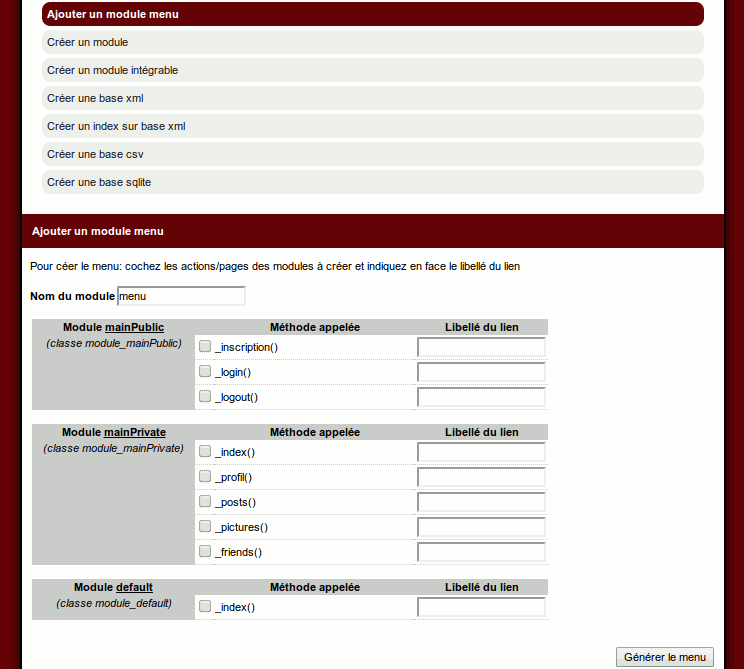

Création d'un réseau social avec le mkframework
-
I Préambule -
II Création et initialisation du projet -
III L'authentification -
IV Créons notre menu -
V Partie privée : le profil -
VI Partie privée : votre réseaux de contacts -
VII Partie privée : votre fil -
VIII Partie privée : administrez vos photos -
IX Profil partagé -
X Design/ esthétique -
XI Conclusion IV Créons notre menu
IV.A Introduction
Une fois authentifié, l'utilisateur sera redirigé dans son espace personnel, où il pourra:
- modifier son profil
- poster des messages
- administrer des albums photos
- envoyer des messages privés
- gérer ses contacts
Il pourra naviguer grâce à un menu
IV.B Créons ce menu via le builder
Cliquez sur "Ajouter un module menu"

Comme vous pouvez le voir, le builder analyse votre projet et vous propose de créer un menu à partir de là.
Ici ce qui nous interesse c'est pour la partie privée mainPrivate
_index/_profil/_posts/_pictures/_friends et pour mainPublic _logout (pour se déconnecter)
Remplissez ces libellé en prenant bien soin de cocher les cases correspondantes
On valide
On peut voir la création du module menu, ainsi que le code a utiliser pour l'ajouter à notre projet
Editer le fichier module/mainPrivate/main.php
Et copiez-collez cette ligne dans votre méthode before()
Et rendez vous de nouveau sur votre partie privée:
Lire la suite : V Partie privée : le profil